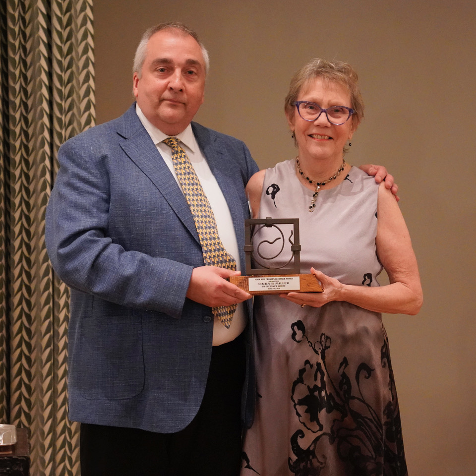

Designated a National Historic Landmark in 2013, the Gothic Revival Second Presbyterian church on South Michigan Avenue is known for its nine Tiffany windows, its compelling Arts and Crafts interior, and more angels you can count hovering on its walls. In 2005, its guardian angel arrived in the person of Linda Miller who recently won the prestigious Glessner Award for her leadership as President of the board of the Friends of Historic Second Church, the secular non-profit formed to preserve and restore its art and architecture.
In presenting the award, Bill Tyre, Executive Director and Curator at Glessner House, noted:
“When Linda took the reins, Friends had completed a couple of small projects but did not consider itself ready to tackle any of the numerous large projects, including restoration of the nine Tiffany windows. Linda had a different vision and pushed the board to think big, believing that a major restoration project would create excitement and significantly raise the visibility of Friends and broaden its base of support.”
We spoke with Linda about her work at Second Presbyterian, home to so many of Chicago’s most prominent families in the late nineteenth century and early twentieth to tell us more about her leadership there.
CCM: Tell us about what your very first impression was when you saw the church for the very first time and what was the occasion?
“I first saw Historic Second Church in 2005 on a Prairie Avenue walking tour led by Bill Tyre, Executive Director and Curator at Glessner House. The tour ended at Second Presbyterian Church. I was awestruck. Despite the century of accumulated dust, I saw the beauty and harmony in Howard Van Doren Shaw’s masterpiece. The awe that I experienced upon first entering the church is an emotion shared by so many of our visitors.”
CCM: What makes the Second Presbyterian one of the finest churches in the world?
“Second Presbyterian Church is one of the nation’s earliest and intact non-residential expressions of American Arts and Crafts. Howard Van Doren Shaw (1869–1926) redesigned the sanctuary in 1901 following a devastating fire. In rebuilding the sanctuary, Shaw worked with a team of innovative local artisans, who went on to influence their generation on a national scale. Chief among Shaw’s collaborators was Frederic Clay Bartlett (1873–1953) who painted the Tree of Life mural in the chancel and twelve murals in the balcony. The sanctuary also contains a stunning collection of Arts & Crafts art elements, including light fixtures, statuary, cast plaster wall and ceiling decorations, carpeting and wooden furniture.
“Most notably, the church houses a veritable museum of stained glass, with nine large Tiffany windows and those of several other American stained-glass artists. It also boasts two English windows from the William Morris Studio, designed by Sir Edward Burne-Jones. It is the only individually named National Historic Landmark Church in Chicago.”
CCM: Tell us about the windows that you have restored and why it is such an intricate process?
“Friends of Historic Second Church has now restored four of the nine Tiffany windows. The windows are all 16 feet by 8½ feet, with thousands of pieces of glass held together with century old lead and covered in lots of dirt and grime. After 125 years, the weight of gravity has begun to take its toll on the windows, with failing steel in the frame and sagging and bulging glass as the lead begins to fail. For all these reasons, the windows need to be removed and cleaned, repaired and restored to their original condition in a studio. Each large window consists of 17–25 panels that must each be removed carefully, crated and taken to the studio for extensive documentation, cleaning and in some cases re-leading. When totally restored each panel is crated, returned to the church and then reinstalled over a period of three days. The process also includes the installation of a new frame to hold the stained-glass and another exterior frame to hold the protective glazing, repair of exterior masonry holding the window, repair on the interior plaster and its repainting and the conservation of the surrounding mural.
“It’s a delicate and painstaking process. But when complete, the windows are transformed and returned to their original appearance with light shimmering through Tiffany’s beautiful multi-colored and patterned glass.”

“We are currently finishing the reinstallation of the 1893 Jeweled window, donated by Marshall Field I. It has more than 12,000 pieces of glass, with over 1,000 in jewel shapes. At the time of its 1893 unveiling, the Chicago Tribune stated that “The window is one of the most remarkable pieces of glass work that has ever been placed in any church in the country.”
CCM: What are some of the other significant projects that have happened recently?
“We have been busy lately. Our most complex project to date was the restoration of the Frederic Clay Bartlett Tree of Life mural which covers the entire front of the sanctuary. This mural is the largest artwork in the church and its restoration has freshened the look of the whole sanctuary. By the end of this year, we will have also restored all twelve of the Bartlett archway murals. For years, they have been so covered in dirt that it was hard to appreciate the beauty and individuality of these pre-Raphaelite murals.”

“Another significant project has been the rewiring of the sanctuary and the restoration of its many wonderful Arts & Crafts light fixtures. The old cloth-covered wiring dated to 1901. We all breathed a sigh of relief knowing that a safety concern has been eliminated. Currently, we are working on the first floor, repairing old plaster and repainting walls and ceiling in Shaw’s original color scheme.
The progress we have made to date provides a glimpse of the grandeur of the 1901 design when it was dedicated and points the way to the rest of the needed restoration.”
CCM: What does the church tell us about the people who worshipped there and about the times when ie was first built?
“The church was built by congregants who lived on the turn-of-the-last-century’s fashionable Prairie Avenue. Many of them had been early settlers of Chicago in the 1830’s and 40’s. They were also the founders of the Chicago Symphony Orchestra, the Art Institute of Chicago, universities, art clubs, and many other Chicago institutions. What you see in the church sanctuary is great art, a great organ that produced beautiful music and the vision of people who were committed to making Chicago a world-class city.”
CCM: Tell us about your background and how it led to your work with Historic Second Church.
“I grew up on the East Coast and have always been interested in history. My college major was history. After retiring from a career in Public Health administration, I was looking to learn more about Chicago history when Bill Tyre introduced me to this historic church where they were recruiting new docents. I became a docent there and became more and more involved in its preservation.”

CCM: What is your vision of the church when everything is completed?
“My vision is a fully restored sanctuary, where when you step through the doors you are returning to the beauty that Howard Van Doren Shaw and Frederic Clay Bartlett created in 1901. I see this beautiful space as a vibrant home to the congregation and to its surrounding community where people come once again to see great art, hear beautiful music, learn about today’s important topics and support one another. I also see it as a “must-see” destination for Chicagoans and visitors to Chicago.”

CCM: Who are some of your heroes—be it architects, artists, members of donors—who have been a part of the church?
“I would love to sit down and talk to Shaw and Bartlett. I’d love to hear from them how they approached the design of the sanctuary. How did the congregation react to creating an entirely different interior, going from the original Gothic interior to the Arts & Crafts. I’d love to hear Bartlett talk about how he designed each mural, who were his muses for the angels, did he have assistants helping him paint?”

“In terms of today’s heroes I can think of three. Bill Tyre, who introduced me to the church and has taught me so much about preservation. Ann Belletire, a dear friend and Friends’ board member, with whom I’ve worked over the last 20 years on preserving this Chicago treasure, and Barbi and Tom Donnelley who were our first lead donors. When they made their lead gift we were a young and inexperienced organization. They took a leap of faith in our capabilities and started the ball rolling on our many subsequent preservation efforts. I feel privileged to work with such wonderful people.”
CCM: What have been some of the biggest challenges?
“I would have to say that the biggest challenge has been raising the money to support the preservation work. But each successful project brings more attention to our work and increases the number of supporters.
“While you might think of the actual preservation work as challenging, I don’t view it that way. We are fortunate to have a diverse group of skilled and committed conservators, artisans, engineers and construction workers who have given us confidence in their abilities and shared with us their knowledge and observations of the art that we, as a team, are preserving.”
CCM: When you started out did you know how far you would come?
“I’ve been pinching myself this year as we complete the restoration of the fourth Tiffany window. When we started to raise money for the first Tiffany window in 2013, I dreamed of doing three windows, but honestly thought that was a fantasy. Now we are discussing which window is next and in what order we should do the rest! ”
CCM: What are the details of your Fall event?
On September 19, we will celebrate the return of the restored Jeweled window.
On October 17 and 18 we will open our doors to Open House Chicago guests.
On October 24 we will host our annual and very popular ‘Basement to Belfry’ tour which goes behind the scenes of our usual tour.
For more information visit: historicsecondchurch.org